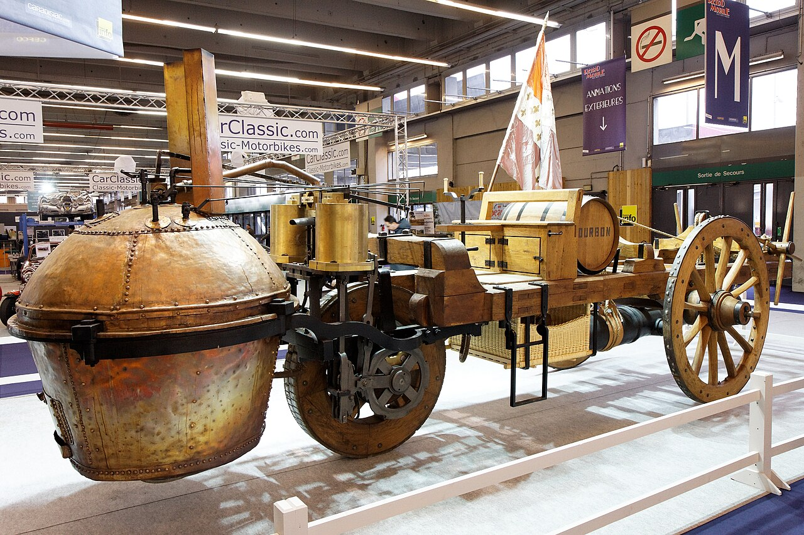
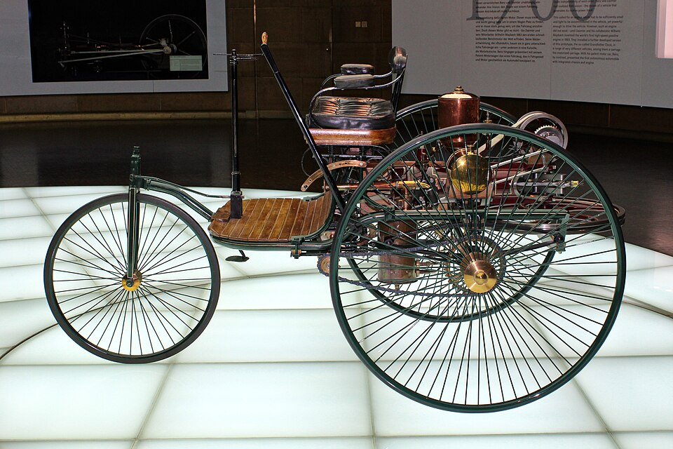
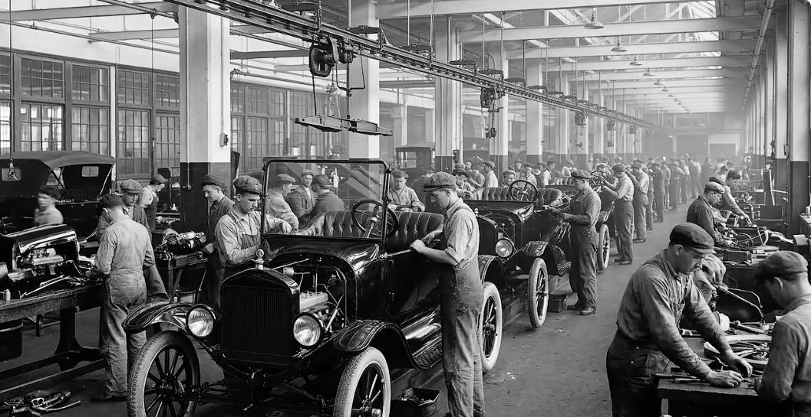

L'héritage Automobile : Des origines à demain
De la toute première machine à vapeur aux supercars hybrides modernes, l'automobile a traversé les siècles en réinventant sans cesse nos déplacements. Découvrez les grandes étapes qui ont façonné cette légende.
-
1769 — Le pionnier de la vapeur : Le Fardier de Cugnot
L'ingénieur français Nicolas-Joseph Cugnot conçoit le tout premier véhicule automobile de l'histoire. Fonctionnant à la vapeur et destiné à déplacer de lourdes pièces d'artillerie, ce prototype expérimental pose les premières bases de la mobilité mécanique.

Le Fardier de Cugnot, véhicule expérimental à vapeur construit en 1769. -
1886 — La naissance de l'automobile moderne : Carl Benz
Carl Benz dépose le brevet officiel de sa Motorwagen, un tricycle propulsé par un moteur à combustion interne à essence. Cette invention capitale est aujourd'hui considérée comme le véritable point de départ de l'industrie automobile.

La Patent-Motorwagen de Carl Benz, brevetée en 1886. -
1908 et 1913 — La révolution industrielle : Ford et la Model T
Henry Ford commercialise la célèbre Ford Model T en 1908, puis introduit le travail à la chaîne en 1913 dans ses usines. Cette innovation majeure permet d'accélérer la production, de réduire drastiquement les coûts et de rendre l'automobile accessible au grand public.

La Ford Model T et le développement de la production en série. -
XXᵉ siècle — L'essor mondial et la démocratisation
Au cours du XXe siècle, la voiture devient un élément central du quotidien. Les constructeurs rivalisent d'ingéniosité pour améliorer le confort, la sécurité, l'aérodynamisme et les performances sportives des véhicules.
-
1997 — L'ère de l'électrification : La première hybride de série
Toyota révolutionne le marché en lançant la Prius au Japon. Combinant un moteur thermique à un moteur électrique, elle devient la toute première voiture hybride produite et vendue en grande série.

La Toyota Prius, voiture hybride commercialisée au Japon en 1997. -
Aujourd'hui — La transition écologique et technologique
L'industrie automobile vit une nouvelle révolution : développement massif de l'électrique, motorisations hydrogène, aides à la conduite intelligentes et véhicules autonomes. La quête de performance s'associe désormais aux enjeux de sobriété énergétique et de sécurité.